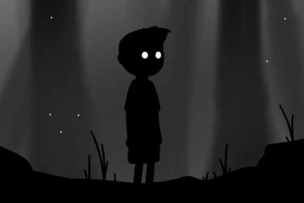
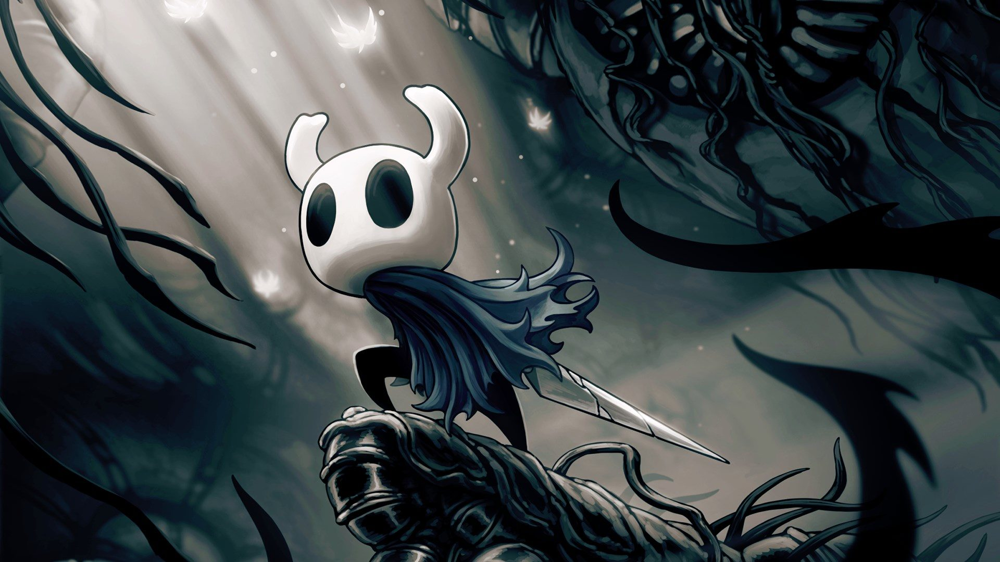

Em Little Nightmares 2, os jogadores controlam Mono, um garoto preso em um mundo distorcido pela interferência da Signal Tower. Com a companhia de Six, é necessário trabalho em equipe para avançar pela campanha, evitando que ela desapareça completamente.
Limbo

Em um mundo negro e sombrio um garoto anonimo de no máximo 13 anos desperta e sai em busca de uma garota, que alguns acreditam ser sua irmã desaparecida. Ele enfrenta varias dificuldades e a vê algumas vezes, mas estranhamente ela desaparece antes mesmo dele a alcançar.
Hollow Knight

O jogador deverá derrotar incontáveis inimigos poderosos e desbloquear habilidades novas para prosseguir no jogo e para explorar o reino esquecido em que se encontra e descobrir seus segredos.
Inside
Inside conta a história de um menino enquanto ele luta para sobreviver contra as forças do mal que estão tentando dominar o mundo através de experimentos em corpos humanos de uma forma totalmente questionável. O menino começa a sua jornada em uma floresta onde estranhas sombras o perseguem. Após despistá-las, o menino encontra um armazém, aonde ele vê uma entidade fazendo experimentos de controle da mente em pessoas. Incomodado com isso, ele decide procurar um meio de impedir que isto continue a acontecer. Os desenvolvedores do game não se declararam quanto a real explicação da história, o que abre um leque de possibilidades para os próprios jogadores tirarem suas conclusões.
Celeste
Celeste é um jogo de plataforma no qual os jogadores controlam uma garota chamada Madeline enquanto ela sobe em uma montanha, evitando vários obstáculos mortais. Além de pular e escalar paredes por um período limitado de tempo, Madeline tem a capacidade de realizar um traço no meio do ar nas oito direções cardeais. Este movimento só pode ser realizado uma vez e deve ser reabastecido, seja aterrissando no chão ou atingindo certos objetos, como cristais (embora o jogador receba uma segunda colisão mais tarde no jogo).
Super Meat Boy
Super Meat Boy é um jogo eletrônico de plataforma em que o jogador controla um personagem vermelho e com formato de cubo chamado Meat Boy, ele deve salvar sua namorada, Bandage Girl, do antagonista Dr. Fetus. O jogo é dividido em capítulos, que juntos somam mais de trezentos níveis.
Unravel
O jogo centra-se em Yarny, uma pequena criatura feita de lã vermelha, que explora o mundo usando o seu próprio corpo. À medida que se move, os fios do corpo de Yarny começam a desenrolar-se, criando uma linha que o jogador usa para resolver os puzzles e para superar os vários obstáculos apresentados ao longo do jogo.